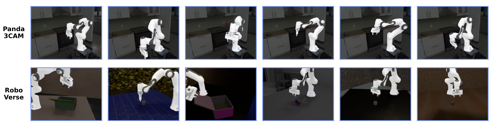
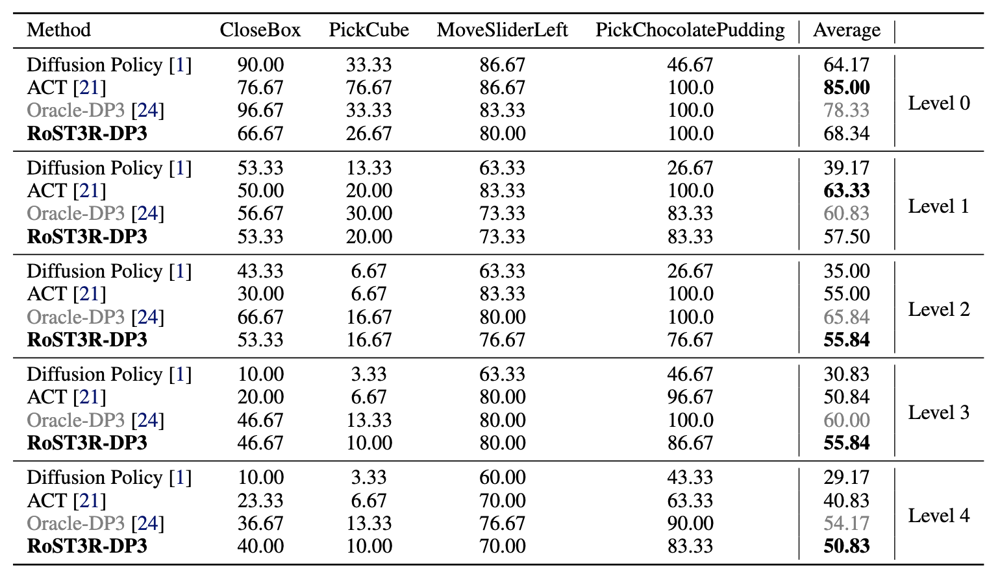
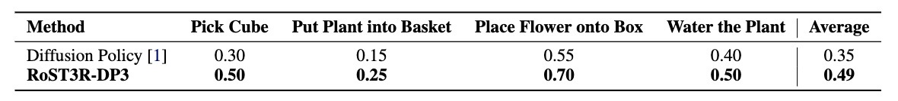

Abstract
Three-dimensional scene representations offer stronger generalization
for policy learning compared to two-dimensional representations, yet collecting
such 3D data has required special sensors. Previous methods for 3D reconstruc-
tion from video exist, but have been unsuitable for robotic learning due to error and
lack of metric calibration. In this work, we demonstrate that 3D scene representa-
tions can be reliably reconstructed from standard 2D RGB images, making it both
accessible and practical for robot learning. We propose a novel framework that
incrementally reconstructs dynamic 3D scenes at metric scale from RGB images,
enabling 3D-aware policy learning in complex environments from only 2D inputs.
At its core, our approach estimates the robot’s pose during scene reconstruction,
registers its kinematic structure within the environment, and builds a unified 3D
scene representation. This unified 3D representation offers two key benefits: it
enables policy learning at metric scale in a consistent world frame—decoupling
object and camera dynamics—and provides a coherent model of the robot and
environment to support fine-grained spatial reasoning. Notably, while the input
remains 2D, our approach generates a 3D-aware representation that significantly
improves generalization. Experiments show that policies trained with this 3D rep-
resentation outperform those trained on 2D inputs, particularly in tasks involving
environmental variations, novel viewpoints and camera motion. In simulation,
our method outperforms 2D counterparts by 24.5% under environmental variations and dynamic camera motion. In real-world scenarios, it achieves a 40.0%
performance improvement.
Results - Robot Pose Estimation
Quantitatively our framework accurately estimates robot pose in real-world scenarios (Panda 3CAM) and under partial occlusion conditions (RoboVerse).
In each image, the robot mesh is projected onto the image using the pose estimated by our method.

Visualization of pose estimation
Results - RoboVerse
Quantitatively, out RoST3R 3D representation demonstrates superior generalization ability compared to its 2D-based counterparts.

Generalization levels of evaluation on RoboVerse benchmark
Results - Real World
Qualitative comparison of real-world task executions using Diffusion Policy (Left) and RoST3R-DP3 (Right).
Quantitatively, Our method outperforms 2D-based Diffusion Policy, highlighting the importance of 3D reasoning capabilities.

Acknowledgements:
We borrow this template from MonST3R, which is originally from DreamBooth.
The interactive 4D visualization is powered by Viser.
We sincerely thank Brent Yi for his support in setting up the online visualization.
 RoST3R: Robot-Aware Dynamic 3D Reconstruction
RoST3R: Robot-Aware Dynamic 3D Reconstruction